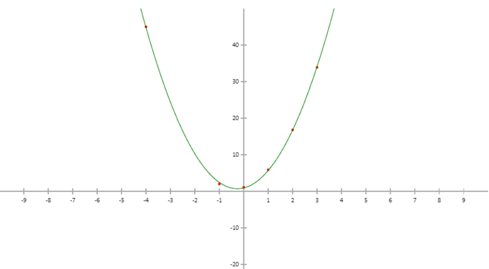

Machine Learning in the Browser
Using deeplearn.js
Oliver Zeigermann / @DJCordhose
Supervised Machine Learning
Surprisingly, despite AI’s breadth of impact, the types of it being deployed are still extremely limited. Almost all of AI’s recent progress is through one type, in which some input data (A) is used to quickly generate some simple response (B)
Andrew Ng: https://hbr.org/2016/11/what-artificial-intelligence-can-and-cant-do-right-now
How does (Supervised) Machine learning work?
Built using deeplearn.js (more on that later in this talk), source code available

deeplearn.js
Full TypeScript ML library using browser GPU

https://pair-code.github.io/deeplearnjs
Includes full training mimicking TensorFlow and NumPy API https://research.googleblog.com/2017/08/harness-power-of-machine-learning-in.html
Our small project
Fit a polynomial curve through some data points
deeplearn.js: Model Builder
Build a neural network in your browser

More Machine Learning with JavaScript
- Facets : data overview visualizations
- Keras.js : Running Keras Models in the Browser using GPU
- TensorFire : GPU based inference (no training) in the browser, runs Keras and TensorFlow models
- ConvNetJS: Visual NN exploration for learning (t-SNE cluster exploration from same auhtor)
- Brain.js : simple and straing forward NN implementation
- synaptic.js: similar to Brain.js, a bit more active
- ml.js: generic low level libs for machine learning
deeplearn.js has the potential to become the JavaScript library for Machine Learning
- can make use of any GPU (not only CUDA)
- has highest reach due to zero installation
- can be easily integrated into existing Web Apps
- can not load trained Keras or Tensorflow models
- coding style highly asynchronous
- GPU processing needs chunks of uninterrupted processing
- currently at 0.3.3, not quite ready for prime time, yet
Machine Learning in the Browser, hh.js 2017
Oliver Zeigermann / @DJCordhose
http://bit.ly/ml-hhjs